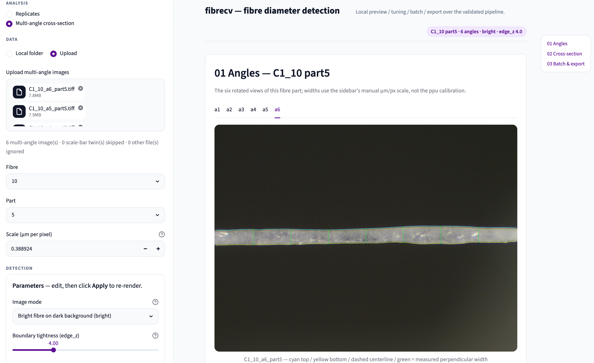
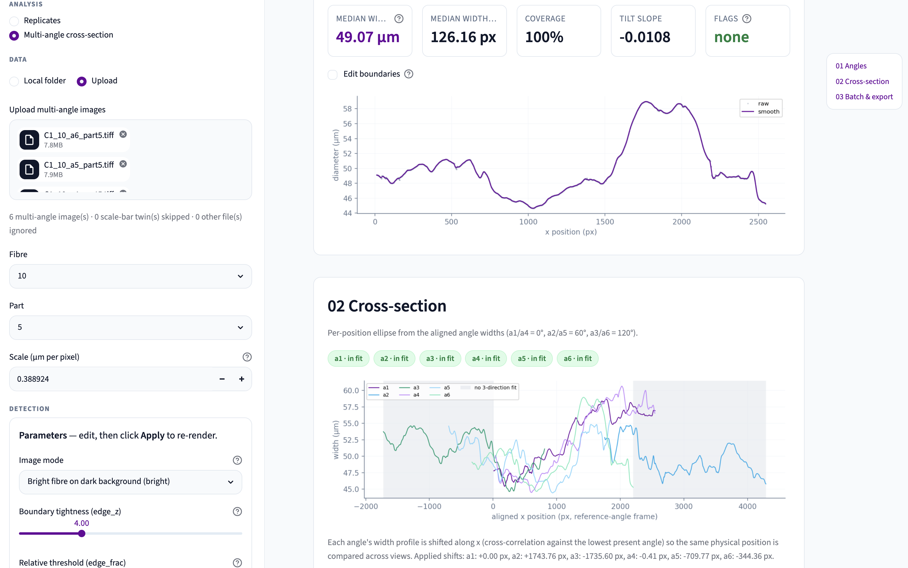
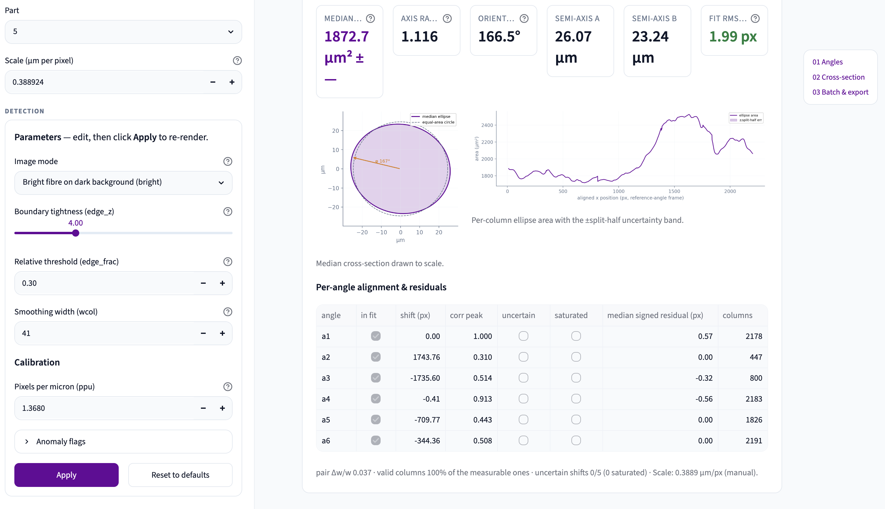

fibrecv · feature overview
Multi-angle cross-section analysis
2026-08-20
1. Overview
This feature adds multi-angle cross-section analysis to fibrecv — both as a CLI stage and an interactive GUI mode. It takes bright-on-dark fibre images captured at 6 rotation positions spaced 60° apart (a1 through a6), measures each image's diameter profile, aligns them via cross-correlation, and fits an ellipse at every position along the fibre to produce a cross-sectional area spectrum. The 6 rotations cover 3 independent projection directions, each measured twice from opposite sides (a1/a4 = 0°, a2/a5 = 60°, a3/a6 = 120°). The GUI provides interactive preview of the fit quality plus one-click batch processing for full datasets.
Tensile integration is not yet added to this mode.
2. Pipeline
Input
Images are named <condition>_<fibre>_a<angle>_part<part>.tiff
— 6 angles (a1–a6) × N parts per fibre. Each angle is a different rotation of
the same fibre segment. The six angles correspond to three projection directions: a1/a4 = 0°,
a2/a5 = 60°, a3/a6 = 120°.
Stage 1 — Per-image measurement
Each image is processed independently. For bright-on-dark fibres, the feature map uses
median(R, G, B) instead of HSV desaturation — the median rejects single-channel
chromatic aberration artefacts. Edge detection finds the top and bottom boundaries, producing a
diameter profile (width vs x position) for each angle.
Stage 2 — Cross-correlation alignment
The 6 diameter profiles need to be aligned because the fibre appears at different x positions in each rotated image. The algorithm cross-correlates each profile against a reference (a1) to find the optimal shift. After alignment, the same x position corresponds to the same physical location on the fibre across all angles.
Stage 3 — Per-column ellipse fit
At each aligned x position, the measured widths from up to 6 angles are fitted to an ellipse model:
w(θ)² = c₀ + c₁·cos(2θ) + c₂·sin(2θ)
This is a 3-parameter linear least-squares problem (3 unknowns from up to 6 observations). From the fitted c₀, c₁, c₂:
- Semi-axes: a, b = √((c₀ ± √(c₁² + c₂²)) / 2)
- Orientation: φ = atan2(c₂, c₁) / 2
- Area: πab
The fit requires all 3 independent projection directions (0°, 60°, 120°) at each column. Missing angles reduce coverage but the fit proceeds as long as all 3 directions have at least one representative.
Fit quality — RMS residual
For each column, the root-mean-square of (measured width − ellipse-predicted width) across the participating angles. The median RMS over all valid columns summarises the overall fit quality. Values below 6 px indicate a good ellipse approximation; above 6 px the fibre is flagged as low-confidence.
Split-half uncertainty
When all 6 angles are present, the area is independently estimated from the two halves (a1–a3 and a4–a6). The difference gives a model-free uncertainty estimate:
area_err = |A(a1, a2, a3) − A(a4, a5, a6)| / 2
This requires all 6 angles; with fewer, the main fit still runs but the uncertainty is unavailable.
Output
A cross-sectional area spectrum — area vs position along the fibre — plus summary statistics (median area, axis ratio a/b, orientation φ, RMS residual) and a per-fibre summary CSV for batch runs.
3. GUI walkthrough
Sidebar
The sidebar (visible on the left in the screenshots below) contains the main controls. Analysis mode radio switches between Replicates and Multi-angle cross-section. Data source selects between local folder and drag-drop upload. Fibre, Part, and Condition selectors navigate the dataset. A manual µm/px scale input (default 0.388924, the C1 microscope's calibration value) sets the physical scale; the ppu field is visible but unused in this mode. Detection parameters with bright-mode defaults are auto-applied on entry into multi-angle mode.
Card 01 — Angles

Card 02 — Cross-section


Card 03 — Batch & export
A one-click batch button measures every image for the selected condition and runs the
cross-section fit across all fibres and parts. The result is a downloadable
xsection_summary.csv with per-fibre statistics including median area, axis ratio,
RMS residual, and low-confidence flags. This card is not shown in the screenshots above.
4. Example: Fibre 10 part 5
The screenshots above show Fibre 10 part 5 from the C1 dataset. All 6 angles are present and participate in the fit (all coverage chips green). The key metrics are:
Median area
1872.7
µm²
Axis ratio
1.116
a / b
Orientation
166.5°
φ
Fit RMS
1.99
px (good)
The semi-axes are 26.07 × 23.24 µm. The fit RMS of 1.99 px is well below the 6 px threshold, shown in purple (good fit). The area display reads “±—” for the split-half uncertainty, indicating that the split-half error was not computed for this particular view (this can occur in upload mode or when angle-pair conditions are not fully met).
The aligned width stack shows all 6 profiles after alignment, with cross-correlation shifts ranging from −1735 to +1743 px. The per-angle QC table reveals that angle a2 contributes relatively little: it has only 447 valid columns and a correlation peak of 0.310 (the lowest among the six). The other angles have correlation peaks ranging from 0.443 to 1.000 and column counts from 800 (a3) to 2191 (a6).
Secondary metrics: pair Δw/w = 0.037 (3.7% width disagreement between same-direction pairs), valid columns 100%.
This fibre was flagged as low-confidence in the study 03 batch summary. The low correlation peak on a2 is a sign of registration difficulty — the a2/a5 angle pair locks to a suboptimal x-registration on some parts. However, the per-column fit quality remains good (RMS 1.99 px), indicating that where the angles do overlap, the ellipse model fits the data well. The issue is a stage-3 registration robustness problem, not an edge-detection failure.
5. Feature list
Pipeline features (CLI + core)
- Multi-angle name parser and file discovery (
<cond>_<fiber>_a<angle>_part<part>.tiff) - Pillow fallback for LZW-compressed Zeiss TIFFs
- Zeiss XML sidecar reader with dual µm/px candidates (camera vs items) and resolver
- Bright feature mode:
median(R, G, B)z-map for bright-on-dark fibres - Clamped relative edge threshold for bright mode (
edge_fracprimary,edge_zfloor,edge_capceiling) k_bandrecalibrated from 4.0 to 6.0 for bright mode (median z-map inflates z-scores)- Cross-angle correlation alignment (
build_part_stack) - Per-column ellipse fit via w²-space linear least-squares (
fit_ellipse_projections) - Split-half area uncertainty (independent fits from a1–a3 vs a4–a6)
- Pair-difference width agreement metric (Δw/w between same-direction angle pairs)
- RMS residual with configurable low-confidence threshold (default 6.0 px)
- Stage-3 CLI (
run_xsection): per-part CSVs + plots, per-fibre summary, shifts JSON - Numeric
--scale-sourcebypasses XML sidecars for manual calibration --anomaly-excludeflag for QC exclusion parity between CLI and GUI- Per-image
y_top_px/y_bot_pxcolumns persisted in measurement CSVs
GUI features
- Analysis mode switch (Replicates / Multi-angle cross-section)
- Bright-mode defaults auto-applied on mode entry (transition-only, not every rerun)
- Mode-aware parameter Reset (resets to bright base in multi-angle mode)
- Multi-angle file loader: local folder and drag-drop upload with name classification
- Manual µm/px scale input (default 0.388924; persists across mode switches)
- Condition selector (shown only when multiple conditions detected)
- Card 01 — Angles: six tabs with overlay image, per-angle metrics, diameter profile plot
- Card 01 — Per-tab manual boundary editor gated behind checkbox (performance optimisation)
- Card 02 — Cross-section: coverage chips, aligned width stack, ellipse metrics row
- Card 02 — Median ellipse drawing (equal-aspect, with equal-area circle reference and φ arrow)
- Card 02 — Area-vs-position plot with ±split-half uncertainty band
- Card 02 — Per-angle QC table (shift, correlation peak, uncertain/saturated flags, residual)
- Card 03 — One-click condition-scoped batch (stage 1 + stage 3, ~20 min for 450 images)
- Card 03 — Summary dataframe with low-confidence flagging + CSV download
- Missing-angle warnings (names which are missing, fits if ≥3 directions available)
- “Cannot fit” error when fewer than 3 projection directions covered
- Jump menu navigation between the three cards
- Tensile card hidden in multi-angle mode (no tensile linkage yet)
6. Challenging cases
The figure below shows edge detection on four representative C1 images, comparing the old
pipeline (red, max(R,G,B) z-map with fixed threshold edge_z = 4) against
the current pipeline (cyan, median(R,G,B) z-map with relative threshold
edge_frac = 0.30). These illustrate the range of image quality the pipeline handles.

Defocused (fibre 01, a5, part 4) — the most common challenge. Defocus produces a soft halo around the fibre edge. The old pipeline’s fixed threshold sat in the middle of this halo, detecting an edge 12 px/side too wide. The relative threshold tracks the steeper part of the wall ramp, reducing the width by 24 px total.
Dim (fibre 08, a3, part 1) — low wall amplitude (∼40 z). Previously the worst-fitting part in the dataset (RMS 11.84 px). The relative threshold places the boundary closer to the true fibre edge; improvement −2.0 px/side.
Sharp (fibre 03, a1, part 1) — a well-focused image with clear edges. The new boundary (cyan) tracks visibly closer to the bright-to-dark transition. No regression — the −6.7 px/side shift is a systematic improvement, not a new artefact. The fibre had a good fit before and after.
Registration lock (fibre 10, a2, part 1) — the one new low-confidence fibre in the dataset. Edge detection itself is clean (cyan tracks the visible edge correctly), but the a2/a5 angle pair locks to a suboptimal x-registration in the cross-correlation step, inflating the per-part RMS. This is a stage-3 alignment issue, not an edge detection problem.
Data. Fibre 10 part 5 from the C1 dataset. Screenshots taken from the
fibrecv GUI on branch worktree-edge-criteria.